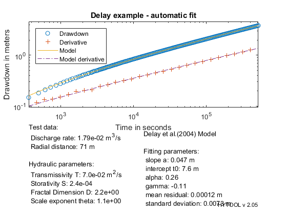
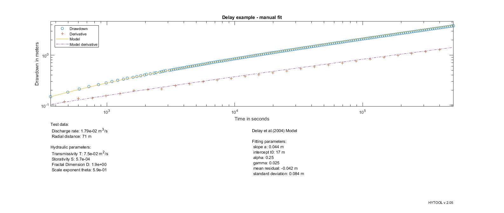

Fractal solution in 2 dimensions
This demonstrates the interpretation of pumping test with the Delay (2004) solution
MIT License Copyright (c) 2017 Philippe Renard - University of Neuchâtel (CHYN)
The data set for this example comes from the following reference: Problem data provided by Fred Delay (2006)
Let us first load the data and plot them.
[t,s]=ldf('del_ds1.dat');
| HYTOOL Demo |
We then define the values of the parameters that are required for the interpretation:
q=0.017916; % Pumping rate in m3/s r=70.75; % Radial distance in m
Once the data have been loaded and the parameter defined, we can interpret the data. We do that as usually in two steps. First the parameters p of the model are estimated with the diagnostic plot. Then we find an optimum fit.
p=fit('del',[0.1,1e2,0.2,0.02],t,s);
HYTOOL WARNING : Due to the large number of data, the non linear fit
function may be very slow. To avoid such inconvenience
hytool has resampled the signal to keep only 150 points.
If you want to force hytool to use all the data, please
use the following syntax: p=fit('model',t,s,'all')
WARNING: hysampling - the number of selected values is smaller than requested
because there is not enough data points to sample regularly the signal.
Norm of Norm of
Iteration SSE Gradient Step
-----------------------------------------------------------
0 0.350328
1 0.184561 46.7324 22.701
2 0.158071 4.83985 7.02999
3 0.141102 4.83679 6.02029
4 0.126489 4.57217 5.14569
5 0.113835 4.38177 4.46386
6 0.102814 4.19681 3.90051
7 0.0931642 4.0158 3.42951
8 0.0846753 3.83978 3.03246
9 0.0771748 3.6697 2.69531
10 0.070521 3.50617 2.40711
11 0.0645962 3.34953 2.15924
12 0.0593027 3.19992 1.94484
13 0.054558 3.05734 1.7584
14 0.0502927 2.92166 1.59548
15 0.0464479 2.7927 1.45246
16 0.0429731 2.67023 1.32635
17 0.0398252 2.55399 1.21471
18 0.0373461 86.4984 8.41611
19 0.0133369 20.9057 3.48493
20 0.00855367 19.6122 2.34946
21 0.00566598 12.271 1.53613
22 0.00410802 8.00699 1.06654
23 0.00321263 5.20336 0.765492
24 0.00268107 3.39605 0.564119
25 0.00235743 2.22799 0.424204
26 0.00215669 1.47026 0.324041
27 0.00203046 12.5361 0.905538
28 0.00180654 1.4609 0.298963
29 0.00180384 0.00191044 0.0129739
30 0.00180384 8.68384e-07 0.000291301
31 0.00180384 9.13437e-07 2.06341e-16
Iterations terminated: relative norm of the current step is less than OPTIONS.TolX
Warning: The Jacobian at the solution is ill-conditioned, and some model
parameters may not be estimated well (they are not identifiable). Use caution
in making predictions.
We can then display the result of the interpretation. Hytool find that the folowing values fort the transmissivity and storativity:
T = 7.5e-2 m2/s and S = 5.7e-4
figure (2) del_rpt(p,t,s,[0.017916,70.75],'Delay example - automatic fit') figure(3) del_rpt([0.044,1.7e1,0.25459,0.025459],t,s,[q,r], 'Delay example - manual fit') 
The results are in reasonable agreement with the values found by Fred Delay (personal communication): T0 = 7.97 e-2 m2/s S0 = 4.89 e-4 alpha = 0.2546 gamma = 0.02546
We then find that the fits are rather similar and both acceptable.